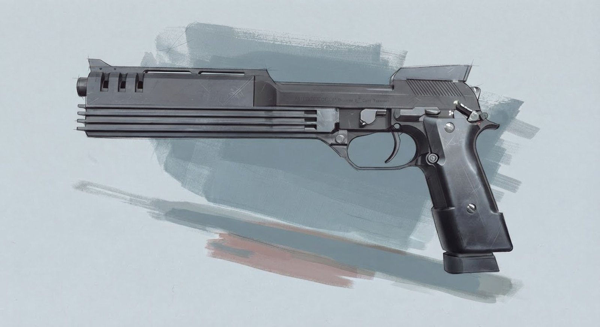

Sci-fi/RoboCop (1987)/Auto-9

▦ 4 photos · ▶ 3 videosWeapon / Sci-fi
Auto-9
RoboCop’s sidearm in RoboCop (1987).
First seenRoboCop, 1987
FireThree-round burst
UnderneathBeretta 93R
Almost usedDesert Eagle
Key sceneThe Auto-9 snaps out of a holster built into RoboCop’s thigh.